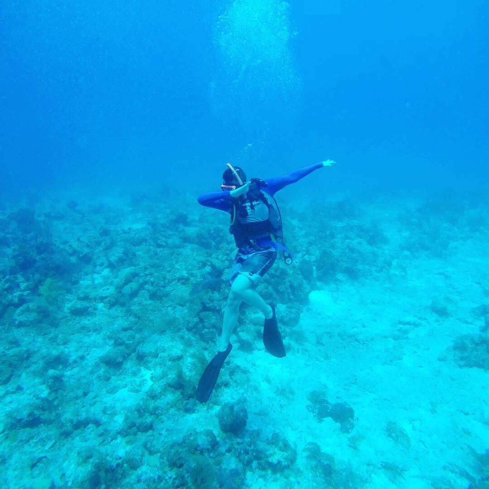

I am currently a 3rd year attending the University of California, Irvine. I am studying to get a bachelors degree in Computer Science with a specialization in Intelligent Systems. My future plans may consist of me going to grad school or even potentially going further and getting a PHD in AI or some AI related field. For now I plan on taking everything one step at a time.
Coding has been apart of my life for as long as I could remember. I was lucky to find this passion when I turned 13 in 7th grade. I joined a club called Java club at my middle school and was instantly captivated by coding. We started off with learning the basics of Java and this was when I found my first love. I loved the idea of being able to solve a solution in any way you wanted and this creativity is really what made me want to study this in college.
The specifics of what I wanted to focus on wasn't necessarily clear, however, I currently started to become more interested in AI. I enjoy most aspects of software engineering(except UI/UX). I would like to have a job mostly focused on backend stuff and in the future go into more of an AI centric job.
I enjoy gaming and building PCs. These are two of my favorite activites currently. My favorite games are Overwatch 2 and Valorant. I am pretty good at Overwatch and am currently grandmaster and have been playing for 5-6 years. I constantly try to find ways to better myself in the game and have a pretty competitive mindset while playing. During highschool I got into esports and played for my school's overwatch team. More recently I have gotten into Valorant and have been trying to get better at that game. I am currently gold and having a lot of fun trying to improve. I also play a bit of League of Legends, however, I don't play that one competitely. I treat League as a game where I play solely for fun.
Scuba diving is another fun hobby of mine. I love going underwater and exploring that world and taking cool photos in the process. Recently I got certified and became an advanced diver on the padi system. I have only gone warm water diving in the Caribbean but want to see what the rest of the world has to offer. I really want to go diving and see the Great Barrier Reef and also want to see the blue hole. So far my favorite dive sites have to be in Cozumel because of the sheer quantity of wildlife I saw and I also had my first night dive there. I have seen things such as eagle rays, nurse and reef sharks, turtles and much more.
In my free time I also enjoy learning more about coding. As stated before, I am currently learning about how I can create my own AIs and get better in that field. My favorite coding language right now is probably C++ because of how convient pointers and classes are. I love that you get to manage your memory distribution and that you get to choose if something is on the heap or stack. Personally, I don't find the freeing aspect of the language a hard thing to understand and just find it very convient.
I found my love for volleyball about 2-3 years ago when my friends decided to invite me and 11 others to play. Then during the summer time we made this a weekly thing where we often would get anywhere between 12-15 people playing every week. I always have a blast playing and it's a great way to get your blood pumping especially when you play it for 3 to 4 hours at a time. I want to say my personal favorite part is how competitve all my friends are while playing the game. We all take it pretty seriously but always remember that we are friends in the end.
Weightlifting is my favorite thing to do as my self care. I've been working on myself trying to get more fit slowly and have been enjoying my college gym. This is my main way to destress because when I'm at the gym, I only focus on lifting.
Something I eventually want to get into a bit more is traveling. I often enjoy traveling with my family but we mostly explored some of the US, most of the Caribbean, and some of Europe. I want to explore Asia and see places such as the philipines, South Korea and Japan. I also am very much interested in exploring Australia. In Europe, I am interested in exploring Norway, Belgium, and Spain. Honestly, I would love to see any place because I enjoy viewing new cultures.